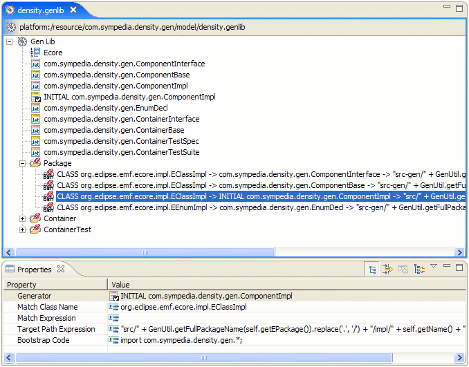
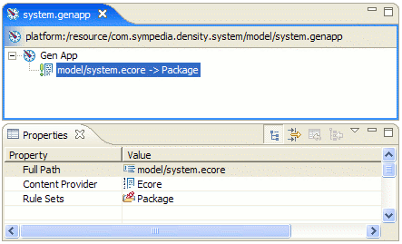
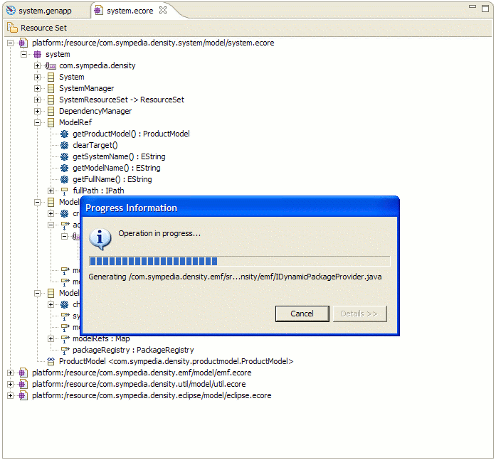
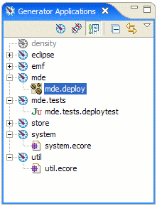
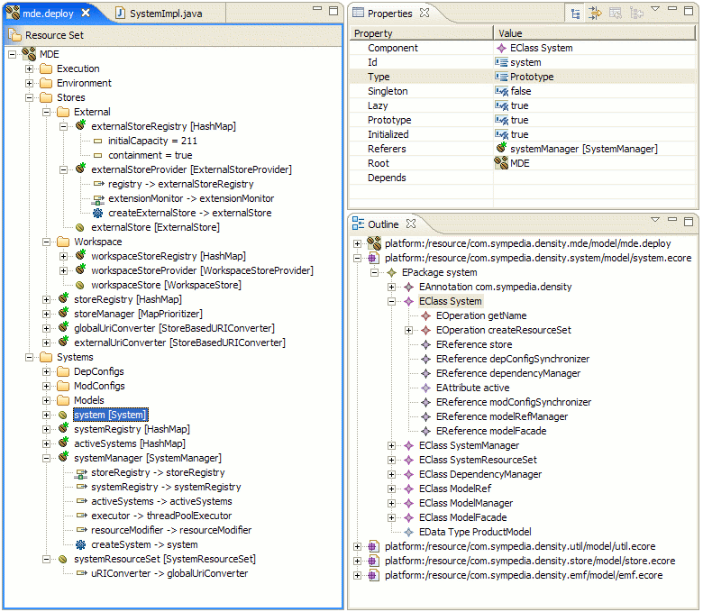
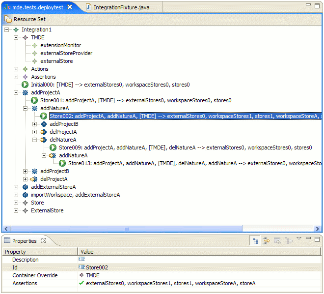
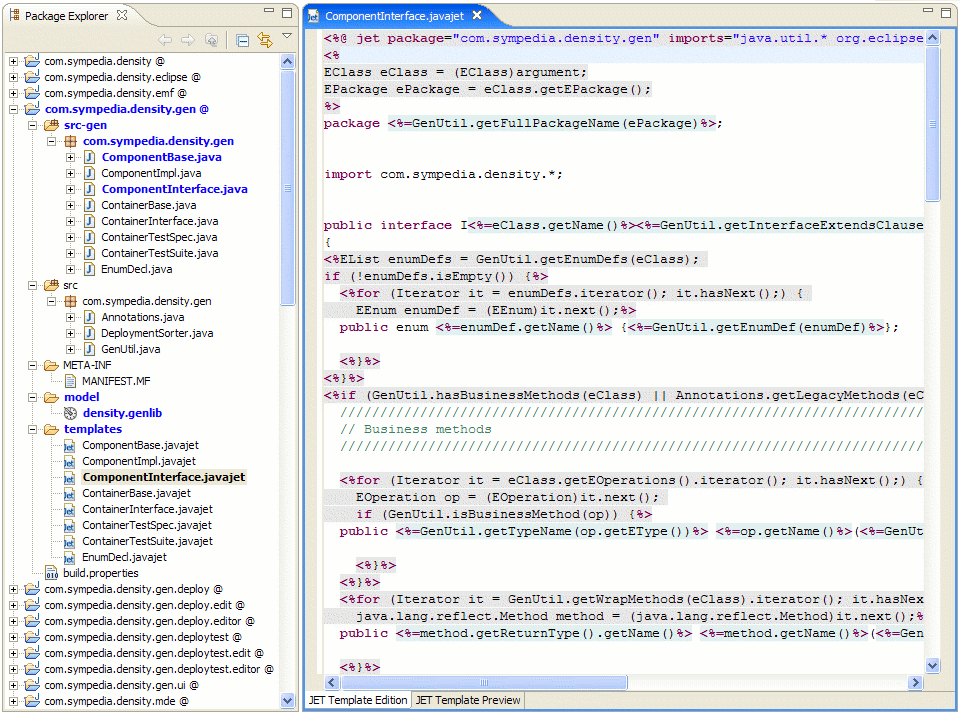
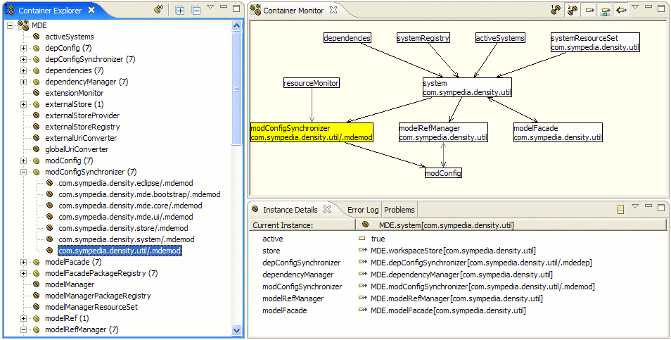

Sympedia GenFw Screenshots
Sympedia GenFw is a flexible and easy to use framework for software artifact
generation. Input models can be associated with generators via extensible rule
sets. Additional Content providers, generators and rules can be provided by
Eclipse plugins.

GenFw - GenLib Editor

GenFw - GenApp Editor

GenFw - Generation

GenFw - GenApps View

GenFw - AntTask

Density - Deployment Model

Density - Integration Test Model

Density - Generator And Meta Models

Density - Runtime Support
Home